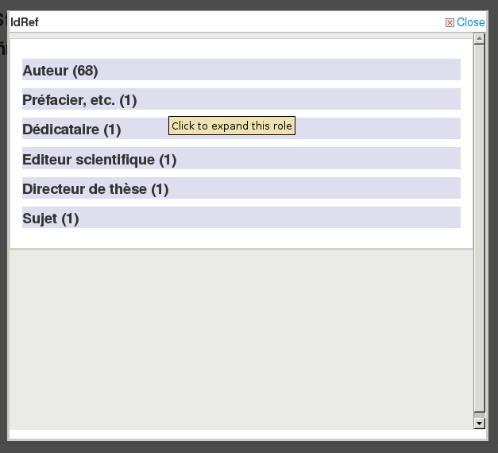

網頁服務
到那裡: 更多 > 管理 > 系統偏好 > 網頁服務
一般
AccessControlAllowOrigin
詢問: 將 Access-Control-Allow-Origin 標題設於 ___
說明：
這是用於 OPAC 報表 SVC 路由的標頭。
ILS-DI
ILS-DI
預設值：停用
詢問：___ 對 OPAC 讀者的 ILS-DI 服務
值：
停用
啟用
IdRef
IdRef
預設值：停用
詢問: ___ 來自OPAC線上公用目錄詳情的 IdRef 網頁服務。IdRef 允許從 Sudoc 資料庫請求權威。
值：
停用
啟用
說明：
IdRef 是 Sudoc 權威的法文服務。使用 Sudoc 資料庫，可以請求/修改/新增權威。若記錄來自 Sudoc (所以 009 欄位將填入整數)，在 OPAC 可看到 “Author: Idref” 若 7..$3 (unimarc 權威) 可填入 ppn。按 Idref 連結，顯示彈出視窗。

請求 Idref 網頁服務則顯示該著者的所有記錄 (依其功能)

有 1 列 / 記錄以及 2 連結在最後。1 將需要 Koha (cgi-bin/koha/opac-search.pl?q=ident:003381862)，另個則導向至 sudoc 頁面 (http://www.sudoc.fr/003381862)。
重要的
請注意此功能僅限於 UNIMARC。
說明
法國的 Sudoc 資料庫不要與與美國政府印刷局 (SuDocs) 分類法弄混。
Mana 知識庫
Mana
詢問：___ 給Mana知識庫的意見書。
預設值：不，讓我想想
值：
停用
啟用
不，讓我想想
說明：
此偏好反應選擇使 Mana KB 定義 在管理模組
ManaToken
詢問: 資安邀請碼用於Mana知識庫的認證: ___
預設值：空白
說明：
此偏好將自動填充您的獨特Mana邀請碼當您註冊:ref:Mana KB定義<share-with-mana-kb-label> 在管理模組。
Mana邀請碼是唯一的且和您的Koha安裝相關. 被用於登入Mana知識庫伺服器避免遭入侵所述伺服器。
OAI-PMH
OAI-PMH
預設值：停用
詢問：___ Koha 的 OAI-PMH 伺服器。
值：
停用
啟用
說明：
Once enabled you can visit http://YOURKOHACATALOG/cgi-bin/koha/oai.pl to see your file. For the Open Archives Initiative-Protocol for Metadata Harvesting (OAI-PMH) there are two groups of ‘participants’: Data Providers and Service Providers. Data Providers (open archives, repositories) provide free access to metadata, and may, but do not necessarily, offer free access to full texts or other resources. OAI-PMH provides an easy to implement, low barrier solution for Data Providers. Service Providers use the OAI interfaces of the Data Providers to harvest and store metadata. Note that this means that there are no live search requests to the Data Providers; rather, services are based on the harvested data via OAI-PMH. Koha at present can only act as a Data Provider. It can not harvest from other repositories. The biggest stumbling block to having Koha harvest from other repositories is that MARC is the only metadata format that Koha indexes natively.
OAI-PMH 詳情見：http://www.openarchives.org/pmh/
OAI-PMH:archiveID
預設值：KOHA-OAI-TEST
詢問：以前置碼 ___ 辦識此網站的紀錄：
OAI-PMH:AutoUpdateSets
預設值：停用
詢問：新增或更新書目紀錄時 ___ 自動更新 OAI-PMH。
值：
停用
啟用
OAI-PMH:AutoUpdateSetsEmbedItemData
預設值：停用
Asks: ___ embedding of item data when automatically updating OAI-PMH sets. NOTE: This needs OAI-PMH:AutoUpdateSets system preference to be enabled.
值：
停用
啟用
OAI-PMH:ConfFile
若此偏好為空的，則 Koha 的開放檔案存取協定伺服器以正常模式運作，否則以延伸模式運作。在延伸模式下，可以納入 marcxml 或 Dublin Core 以外的格式。OAI-PMH:ConfFile 指定一個 YAML 組態檔列出可用的後設資料格式以及從 marcxml 紀錄新增 XSL 檔案。
詳情，見附錄的 conf 檔案範例 區塊。
OAI-PMH:DeletedRecord
預設：永不空白或截切 (持續)
詢問：Koha 的 deletedbiblio 表單 ___
值：
永遠沒有資料在內 (不)
永不空白或截切 (持續)
有時可能空白或截切 (暫時)
OAI-PMH:MaxCount
預設值：50
詢問：回應 ListRecords 或 ListIdentifiers 查詢時一次只送回 ___ 筆紀錄。
說明：
這是根據擷取器 ListRecord 或 ListIdentifier 詢問可取回的最大值紀錄。ListRecords 擷取全部紀錄而 ListIdentifier 是 ListRecords 的摘要格式，只擷取標題不取紀錄。
REST API
RESTBasicAuth
詢問：___ REST API 的基本身份驗證。
預設值：停用
值：
停用
啟用
說明：
如果啟用，則為 REST API 啟用基本身份驗證。
RESTdefaultPageSize
詢問：設定 REST API 每頁可以送回 ___ 個結果。
預設值：20
說明：
此偏好允許您選擇每頁端點結果的數量
RESTOAuth2ClientCredentials
詢問：___ OAuth2 客戶授與憑證供 REST API 使用。
預設值：停用
值：
停用
啟用
說明：
如果啟用，則為 REST API 啟用 OAuth2 客戶端的憑證流。
备注
必須安裝 Net::OAuth2::AuthorizationServer。
RESTPublicAnonymousRequests
詢問：___ 匿名訪問公開路由（不需要經過身份驗證的訪問）
預設值：啟用
值：
停用
啟用
說明：
如果啟用，API 將允許匿名訪問不需要身份驗證訪問的公共路由。
RESTPublicAPI
詢問：___ API 的 /公開命名空間。
預設值：啟用
值：
停用
啟用
說明：
如果啟用，REST API 將公開 /公開端點。
報表
SvcMaxReportRows
預設值：10
詢問： 只送回 ___ 經由報表頁面服務指定報表的列數。
說明：
此值限制 `公共報表 <#publicreport>`__的結果數量。